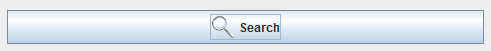
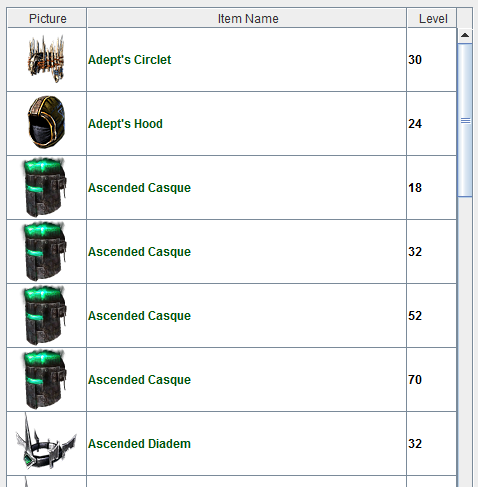
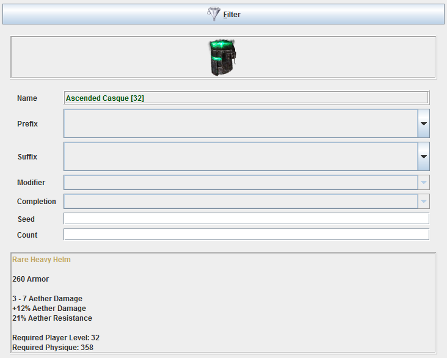
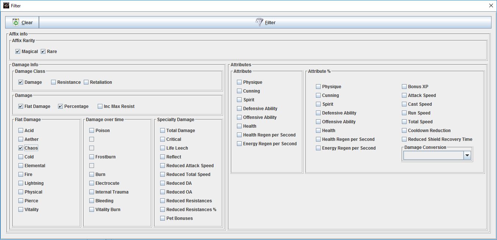
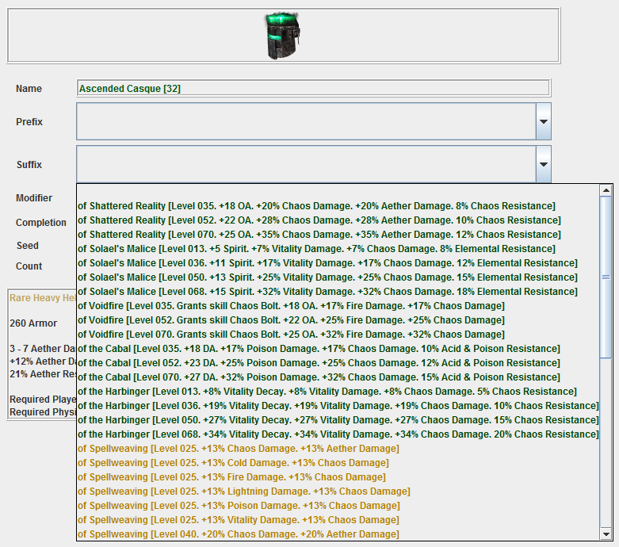

Crafting an item might be a slight misnomer, you use the 'Crafting' page to create items with the prefix, suffix,
blacksmith bonus and completion bonus specified by you.
Depending on the settings, these items are either identical to the ones that can legally be created by a blacksmith
in Grim Dawn or found from drops, or they can have affixes that would never be possible in Grim Dawn for that
particular item.
To create an item, first select the base item by searching for it. There are no magical base
items, as all magical items are common base items with a magical affix. Rare items here are Monster Infrequents
or faction gear (which both can have magical or rare affixes). In game rare items can also be common base items
with a rare affix.

This search shows all items available in Grim Dawn that meet the selection criteria.

An item is selected by either clicking on any of its columns or by hovering over its image. The latter allows for
a convenient browsing of all returned items.
For the selected base item, you can then choose the prefix, suffix, blacksmith bonus and completion bonus, as
appropriate for the item. You can also specify a seed, this is only useful in rare cases however. If the seed
is left empty, a new random seed is being generated when the item is being added to the shared stash.
The item stats displayed are not changed by the seed as the logic how the seed changes the item stats is unknown.
The item will always show the base stats from database.arz instead.

As there are a lot of prefixes and suffixes to choose from, you can use the Filter button to narrow down the affixes
to ones that contain the bonuses specified in the filter.

After a filter has been applied, the prefixes and suffixes only show entries that meet the filter criteria.

To show all affixes again, use an empty filter, i.e. open the Filter popup and press its 'Filter' button without
selecting anything.
Once you have created the intended item, you place it in the shared stash by clicking on an empty spot in the
stash on the right side of the page.